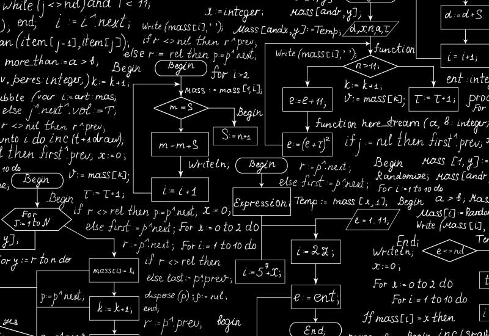

- ¿Qué es un seguidor de línea?
- Tipos de sensores IR (reflectivos)
- Motor DC, puente H, ruedas
- Microcontroladores (Arduino UNO, ESP32, etc.)
CLASE 1: Introducción al proyecto y componentes
CLASE 2: Montaje del hardware

- placeholder
- placeholder
- placeholder
- placeholder
CLASE 3: Programación básica

- placeholder
- placeholder
- placeholder
- placeholder
CLASE 4: Control básico de motores
- Control de velocidad con PWM
- Funciones para mover hacia adelante, girar izquierda/derecha, detenerse
CLASE 5: Algoritmo básico de seguimiento

Ir a la clase →
- Lógica de decisión simple
CLASE 6: Mejora del control – Proporcional (PID opcional)
- Concepto de control proporcional
- Usar diferencia entre sensores para ajustar velocidad suavemente
- Suavizado del movimiento
CLASE 7: Práctica final y desafío

- Repaso general
- Calibración final
- Diseño de pista de prueba